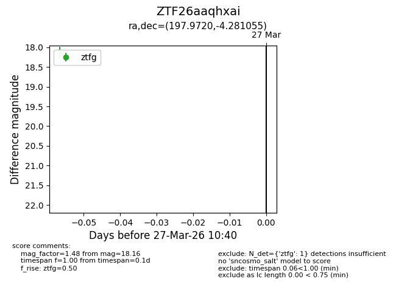
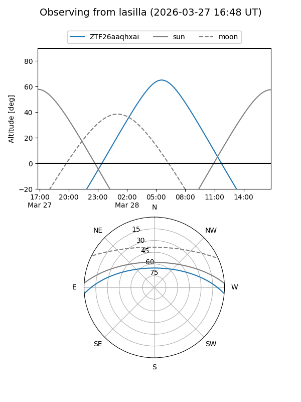
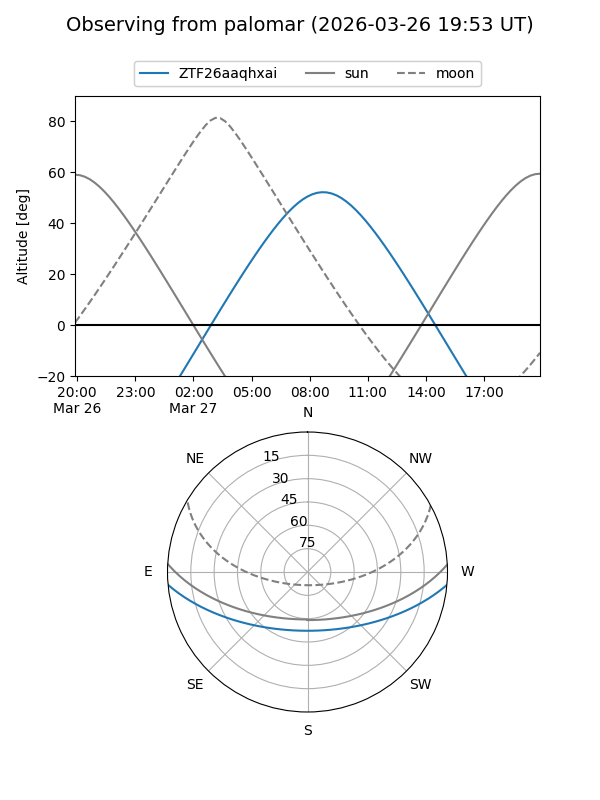

ZTF26aaqhxai
Target ZTF26aaqhxai at 2026-03-27 10:43
Aliases and brokers:
FINK: link
Lasair: link
ALeRCE: link
alt names
ZTF26aaqhxai (ztf,fink_ztf)
Coordinates:
equatorial (ra, dec) = 197.9720,-4.28105
equatorial (HMS+DMS) = 13:11:53.27,-04:16:51.80
galactic (l, b) = (312.6416,+58.20464)
Flags:
Photometry:
last ztfg=18.16
1 ztfg detections
Lightcurve

Visibility


Additional plots